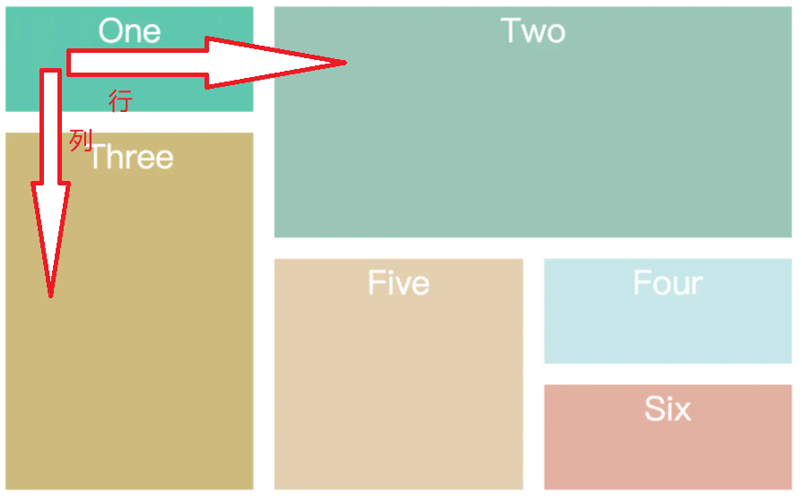
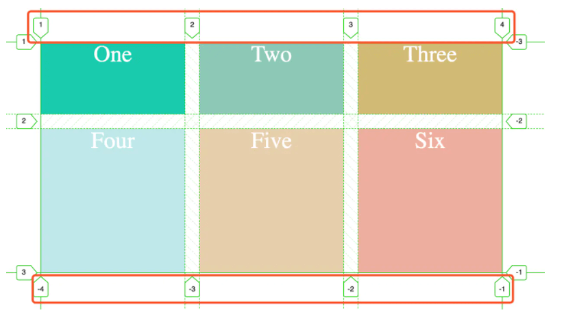
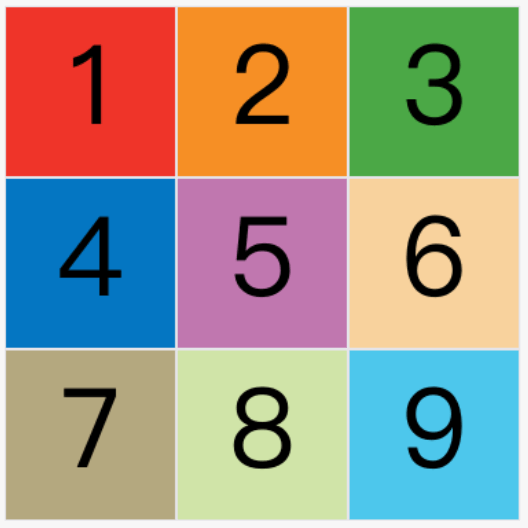
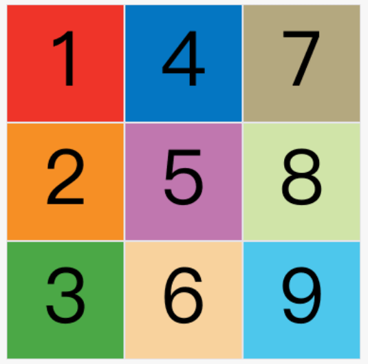
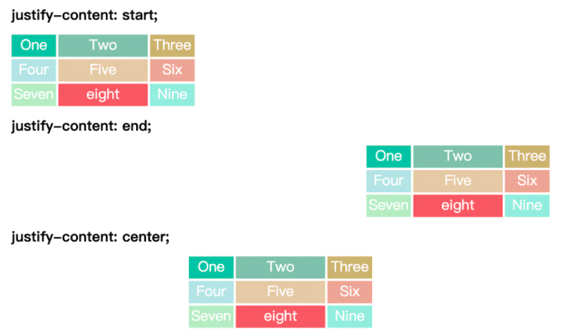
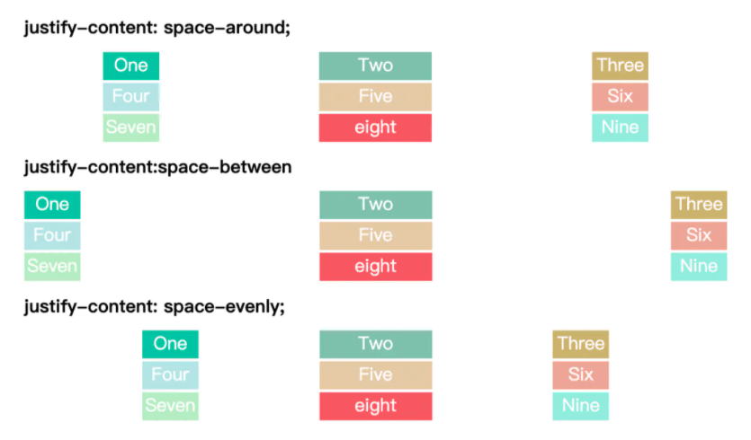
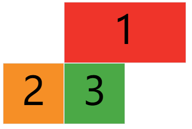
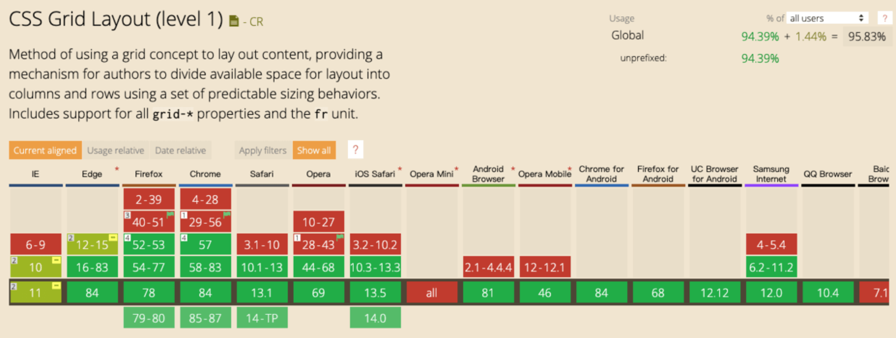

grid网格布局是什么？
参考答案
一、是什么
Grid 布局即网格布局，是一个二维的布局方式，由纵横相交的两组网格线形成的框架性布局结构，能够同时处理行与列
擅长将一个页面划分为几个主要区域，以及定义这些区域的大小、位置、层次等关系

这与之前讲到的flex一维布局不相同
设置display:grid/inline-grid的元素就是网格布局容器，这样就能出发浏览器渲染引擎的网格布局算法
<div class="container">
<div class="item item-1">
<p class="sub-item"></p >
</div>
<div class="item item-2"></div>
<div class="item item-3"></div>
</div> 上述代码实例中，.container元素就是网格布局容器，.item元素就是网格的项目，由于网格元素只能是容器的顶层子元素，所以p元素并不是网格元素
这里提一下，网格线概念，有助于下面对grid-column系列属性的理解
网格线，即划分网格的线，如下图所示：

上图是一个 2 x 3 的网格，共有3根水平网格线和4根垂直网格线
二、属性
同样，Grid 布局属性可以分为两大类：
- 容器属性，
- 项目属性
关于容器属性有如下：
display 属性
文章开头讲到，在元素上设置display：grid 或 display：inline-grid 来创建一个网格容器
- display：grid 则该容器是一个块级元素
- display: inline-grid 则容器元素为行内元素
grid-template-columns 属性，grid-template-rows 属性
grid-template-columns 属性设置列宽，grid-template-rows 属性设置行高
.wrapper {
display: grid;
/* 声明了三列，宽度分别为 200px 200px 200px */
grid-template-columns: 200px 200px 200px;
grid-gap: 5px;
/* 声明了两行，行高分别为 50px 50px */
grid-template-rows: 50px 50px;
}以上表示固定列宽为 200px 200px 200px，行高为 50px 50px
上述代码可以看到重复写单元格宽高，通过使用repeat()函数，可以简写重复的值
- 第一个参数是重复的次数
- 第二个参数是重复的值
所以上述代码可以简写成
.wrapper {
display: grid;
grid-template-columns: repeat(3,200px);
grid-gap: 5px;
grid-template-rows:repeat(2,50px);
}除了上述的repeact关键字，还有：
- auto-fill：示自动填充，让一行（或者一列）中尽可能的容纳更多的单元格
grid-template-columns: repeat(auto-fill, 200px) 表示列宽是 200 px，但列的数量是不固定的，只要浏览器能够容纳得下，就可以放置元素- fr：片段，为了方便表示比例关系
grid-template-columns: 200px 1fr 2fr 表示第一个列宽设置为 200px，后面剩余的宽度分为两部分，宽度分别为剩余宽度的 1/3 和 2/3- minmax：产生一个长度范围，表示长度就在这个范围之中都可以应用到网格项目中。第一个参数就是最小值，第二个参数就是最大值
minmax(100px, 1fr)表示列宽不小于100px，不大于1fr
- auto：由浏览器自己决定长度
grid-template-columns: 100px auto 100px 表示第一第三列为 100px，中间由浏览器决定长度grid-row-gap 属性， grid-column-gap 属性， grid-gap 属性
grid-row-gap 属性、grid-column-gap 属性分别设置行间距和列间距。grid-gap 属性是两者的简写形式
grid-row-gap: 10px 表示行间距是 10px
grid-column-gap: 20px 表示列间距是 20px
grid-gap: 10px 20px 等同上述两个属性
grid-template-areas 属性
用于定义区域，一个区域由一个或者多个单元格组成
.container {
display: grid;
grid-template-columns: 100px 100px 100px;
grid-template-rows: 100px 100px 100px;
grid-template-areas: 'a b c'
'd e f'
'g h i';
}上面代码先划分出9个单元格，然后将其定名为a到i的九个区域，分别对应这九个单元格。
多个单元格合并成一个区域的写法如下
``css<br> grid-template-areas: 'a a a'<br> 'b b b'<br> 'c c c';<br> ``
上面代码将9个单元格分成a、b、c三个区域
如果某些区域不需要利用，则使用"点"（.）表示
grid-auto-flow 属性
划分网格以后，容器的子元素会按照顺序，自动放置在每一个网格。
顺序就是由grid-auto-flow决定，默认为行，代表"先行后列"，即先填满第一行，再开始放入第二行

当修改成column后，放置变为如下：

justify-items 属性， align-items 属性， place-items 属性
justify-items 属性设置单元格内容的水平位置（左中右），align-items 属性设置单元格的垂直位置（上中下）
两者属性的值完成相同
.container {
justify-items: start | end | center | stretch;
align-items: start | end | center | stretch;
}属性对应如下：
- start：对齐单元格的起始边缘
- end：对齐单元格的结束边缘
- center：单元格内部居中
- stretch：拉伸，占满单元格的整个宽度（默认值）
place-items属性是align-items属性和justify-items属性的合并简写形式
justify-content 属性， align-content 属性， place-content 属性
justify-content属性是整个内容区域在容器里面的水平位置（左中右），align-content属性是整个内容区域的垂直位置（上中下）
.container {
justify-content: start | end | center | stretch | space-around | space-between | space-evenly;
align-content: start | end | center | stretch | space-around | space-between | space-evenly;
}两个属性的写法完全相同，都可以取下面这些值：
- start - 对齐容器的起始边框
- end - 对齐容器的结束边框
- center - 容器内部居中

- space-around - 每个项目两侧的间隔相等。所以，项目之间的间隔比项目与容器边框的间隔大一倍
- space-between - 项目与项目的间隔相等，项目与容器边框之间没有间隔
- space-evenly - 项目与项目的间隔相等，项目与容器边框之间也是同样长度的间隔
- stretch - 项目大小没有指定时，拉伸占据整个网格容器

grid-auto-columns 属性和 grid-auto-rows 属性
有时候，一些项目的指定位置，在现有网格的外部，就会产生显示网格和隐式网格
比如网格只有3列，但是某一个项目指定在第5行。这时，浏览器会自动生成多余的网格，以便放置项目。超出的部分就是隐式网格
而grid-auto-rows与grid-auto-columns就是专门用于指定隐式网格的宽高
关于项目属性，有如下：
grid-column-start 属性、grid-column-end 属性、grid-row-start 属性以及grid-row-end 属性
指定网格项目所在的四个边框，分别定位在哪根网格线，从而指定项目的位置
- grid-column-start 属性：左边框所在的垂直网格线
- grid-column-end 属性：右边框所在的垂直网格线
- grid-row-start 属性：上边框所在的水平网格线
- grid-row-end 属性：下边框所在的水平网格线
举个例子：
<style>
#container{
display: grid;
grid-template-columns: 100px 100px 100px;
grid-template-rows: 100px 100px 100px;
}
.item-1 {
grid-column-start: 2;
grid-column-end: 4;
}
</style>
<div id="container">
<div class="item item-1">1</div>
<div class="item item-2">2</div>
<div class="item item-3">3</div>
</div>通过设置grid-column属性，指定1号项目的左边框是第二根垂直网格线，右边框是第四根垂直网格线

grid-area 属性
grid-area 属性指定项目放在哪一个区域
.item-1 {
grid-area: e;
}意思为将1号项目位于e区域
与上述讲到的grid-template-areas搭配使用
justify-self 属性、align-self 属性以及 place-self 属性
justify-self属性设置单元格内容的水平位置（左中右），跟justify-items属性的用法完全一致，但只作用于单个项目。
align-self属性设置单元格内容的垂直位置（上中下），跟align-items属性的用法完全一致，也是只作用于单个项目
``css<br> .item {<br> justify-self: start | end | center | stretch;<br> align-self: start | end | center | stretch;<br> }<br> ``
这两个属性都可以取下面四个值。
- start：对齐单元格的起始边缘。
- end：对齐单元格的结束边缘。
- center：单元格内部居中。
- stretch：拉伸，占满单元格的整个宽度（默认值）
三、应用场景
文章开头就讲到，Grid是一个强大的布局，如一些常见的 CSS 布局，如居中，两列布局，三列布局等等是很容易实现的，在以前的文章中，也有使用Grid布局完成对应的功能
关于兼容性问题，结果如下：

总体兼容性还不错，但在 IE 10 以下不支持
目前，Grid布局在手机端支持还不算太友好
CSS Grid布局是一种二维布局系统，允许你以网格的形式在网页上放置元素。它提供了一种更灵活和强大的方式，来创建复杂的页面布局，而不需要依赖传统的浮动或定位技术。
- 容器：使用
display: grid;将一个元素定义为网格容器。 - 行和列：通过定义行和列的尺寸来创建网格的行和列。
- 网格线：网格的行和列由网格线定义，可以通过
grid-template-columns和grid-template-rows属性来指定。 - 网格单元格：网格容器内的子元素会被放置在网格单元格中。
- 网格区域：可以定义一个或多个连续的网格单元格，形成一个区域。
- 对齐：可以通过
justify-items、align-items和place-items属性来控制网格单元格内的内容对齐方式。 - 自适应尺寸：可以使用
fr单位来定义自适应的行和列尺寸，fr代表一个网格容器的可用空间的分数。 - 间隙：可以通过
grid-gap、row-gap和column-gap属性来定义网格行和列之间的间隙。 - 重叠：网格布局允许元素重叠，可以通过
z-index属性来控制重叠元素的堆叠顺序。 - 响应式：可以通过媒体查询来调整网格的布局，使其在不同屏幕尺寸下表现良好。
示例代码
.container {
display: grid;
grid-template-columns: repeat(3, 1fr); /* 创建三列，每列等宽 */
grid-gap: 10px; /* 定义行和列之间的间隙 */
}
.item {
/* 子元素将自动填充网格单元格 */
}在这个示例中，.container 被定义为一个网格容器，拥有三列，每列宽度相等，并且行和列之间有10像素的间隙。
考察重点
- 对CSS Grid布局的基本概念和特性的理解。
- 能够使用Grid布局创建复杂的页面布局。
- 理解如何控制网格的行、列、单元格和区域。